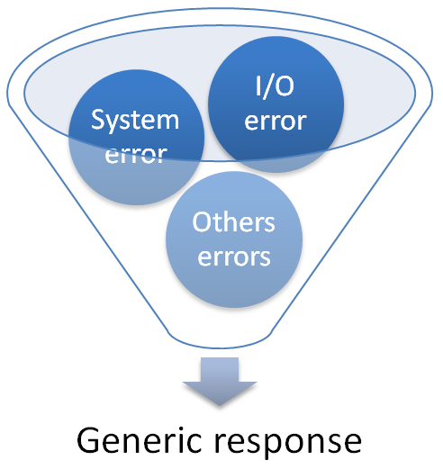

Error Handling Cheat Sheet¶
Introduction¶
Error handling is a part of the overall security of an application. Except in movies, an attack always begins with a Reconnaissance phase in which the attacker will try to gather as much technical information (often name and version properties) as possible about the target, such as the application server, frameworks, libraries, etc.
Unhandled errors can assist an attacker in this initial phase, which is very important for the rest of the attack.
The OWASP Web Security Testing Guide explains how error messages can expose application details.
Context¶
Issues at the error handling level can reveal a lot of information about the target and can also be used to identify injection points in the target's features.
Below is an example of the disclosure of a technology stack, here the Struts2 and Tomcat versions, via an exception rendered to the user:
HTTP Status 500 - For input string: "null"
type Exception report
message For input string: "null"
description The server encountered an internal error that prevented it from fulfilling this request.
exception
java.lang.NumberFormatException: For input string: "null"
java.lang.NumberFormatException.forInputString(NumberFormatException.java:65)
java.lang.Integer.parseInt(Integer.java:492)
java.lang.Integer.parseInt(Integer.java:527)
sun.reflect.NativeMethodAccessorImpl.invoke0(Native Method)
sun.reflect.NativeMethodAccessorImpl.invoke(NativeMethodAccessorImpl.java:57)
sun.reflect.DelegatingMethodAccessorImpl.invoke(DelegatingMethodAccessorImpl.java:43)
java.lang.reflect.Method.invoke(Method.java:606)
com.opensymphony.xwork2.DefaultActionInvocation.invokeAction(DefaultActionInvocation.java:450)
com.opensymphony.xwork2.DefaultActionInvocation.invokeActionOnly(DefaultActionInvocation.java:289)
com.opensymphony.xwork2.DefaultActionInvocation.invoke(DefaultActionInvocation.java:252)
org.apache.struts2.interceptor.debugging.DebuggingInterceptor.intercept(DebuggingInterceptor.java:256)
com.opensymphony.xwork2.DefaultActionInvocation.invoke(DefaultActionInvocation.java:246)
...
note: The full stack trace of the root cause is available in the Apache Tomcat/7.0.56 logs.
Below is an example of disclosure of a SQL query error, along with the site installation path, that can be used to identify an injection point:
Warning: odbc_fetch_array() expects parameter /1 to be resource, boolean given
in D:\app\index_new.php on line 188
The OWASP Testing Guide provides different techniques to obtain technical information from an application.
Objective¶
The article shows how to configure a global error handler as part of your application's runtime configuration. In some cases, it may be more efficient to define this error handler as part of your code. The outcome being that when an unexpected error occurs then a generic response is returned by the application but the error details are logged server side for investigation, and not returned to the user.
The following schema shows the target approach:

As most recent application topologies are API based, we assume in this article that the backend exposes only a REST API and does not contain any user interface content. The application should try and exhaustively cover all possible failure modes and use 5xx errors only to indicate responses to requests that it cannot fulfill, but not provide any content as part of the response that would reveal implementation details. For that, RFC 7807 - Problem Details for HTTP APIs defines a document format.
For the error logging operation itself, the logging cheat sheet should be used. This article focuses on the error handling part.
Proposition¶
For each technology stack, the following configuration options are proposed:
Standard Java Web Application¶
For this kind of application, a global error handler can be configured at the web.xml deployment descriptor level.
We propose here a configuration that can be used from Servlet specification version 2.5 and above.
With this configuration, any unexpected error will cause a redirection to the page error.jsp in which the error will be traced and a generic response will be returned.
Configuration of the redirection into the web.xml file:
<?xml version="1.0" encoding="UTF-8"?>
<web-app xmlns:xsi="http://www.w3.org/2001/XMLSchema-instance" ns="http://java.sun.com/xml/ns/javaee"
xsi:schemaLocation="http://java.sun.com/xml/ns/javaee http://java.sun.com/xml/ns/javaee/web-app_3_0.xsd"
version="3.0">
...
<error-page>
<exception-type>java.lang.Exception</exception-type>
<location>/error.jsp</location>
</error-page>
...
</web-app>
Content of the error.jsp file:
<%@ page language="java" isErrorPage="true" contentType="application/json; charset=UTF-8"
pageEncoding="UTF-8"%>
<%
String errorMessage = exception.getMessage();
//Log the exception via the content of the implicit variable named "exception"
//...
//We build a generic response with a JSON format because we are in a REST API app context
//We also add an HTTP response header to indicate to the client app that the response is an error
response.setHeader("X-ERROR", "true");
//Note that we're using an internal server error response
//In some cases it may be prudent to return 4xx error codes, when we have misbehaving clients
response.setStatus(500);
%>
{"message":"An error occur, please retry"}
Java SpringMVC/SpringBoot web application¶
With SpringMVC or SpringBoot, you can define a global error handler by implementing the following class in your project. Spring Framework 6 introduced the problem details based on RFC 7807.
We indicate to the handler, via the annotation @ExceptionHandler, to act when any exception extending the class java.lang.Exception is thrown by the application. We also use the ProblemDetail class to create the response object.
import org.springframework.http.HttpStatus;
import org.springframework.http.ProblemDetail;
import org.springframework.web.bind.annotation.ExceptionHandler;
import org.springframework.web.bind.annotation.RestControllerAdvice;
import org.springframework.web.context.request.WebRequest;
import org.springframework.web.servlet.mvc.method.annotation.ResponseEntityExceptionHandler;
/**
* Global error handler in charge of returning a generic response in case of unexpected error situation.
*/
@RestControllerAdvice
public class RestResponseEntityExceptionHandler extends ResponseEntityExceptionHandler {
@ExceptionHandler(value = {Exception.class})
public ProblemDetail handleGlobalError(Exception exception, WebRequest request) {
//Log the exception via the content of the parameter named "exception"
//...
//Note that we're using an internal server error response
//In some cases it may be prudent to return 4xx error codes, if we have misbehaving clients
//By specification, the content-type can be "application/problem+json" or "application/problem+xml"
return ProblemDetail.forStatusAndDetail(HttpStatus.INTERNAL_SERVER_ERROR, "An error occur, please retry");
}
}
References:
ASP NET Core web application¶
With ASP.NET Core, you can define a global error handler by indicating that the exception handler is a dedicated API Controller.
Content of the API Controller dedicated to the error handling:
using Microsoft.AspNetCore.Authorization;
using Microsoft.AspNetCore.Diagnostics;
using Microsoft.AspNetCore.Mvc;
using System;
using System.Collections.Generic;
using System.Net;
namespace MyProject.Controllers
{
/// <summary>
/// API Controller used to intercept and handle all unexpected exception
/// </summary>
[Route("api/[controller]")]
[ApiController]
[AllowAnonymous]
public class ErrorController : ControllerBase
{
/// <summary>
/// Action that will be invoked for any call to this Controller in order to handle the current error
/// </summary>
/// <returns>A generic error formatted as JSON because we are in a REST API app context</returns>
[HttpGet]
[HttpPost]
[HttpHead]
[HttpDelete]
[HttpPut]
[HttpOptions]
[HttpPatch]
public JsonResult Handle()
{
//Get the exception that has implied the call to this controller
Exception exception = HttpContext.Features.Get<IExceptionHandlerFeature>()?.Error;
//Log the exception via the content of the variable named "exception" if it is not NULL
//...
//We build a generic response with a JSON format because we are in a REST API app context
//We also add an HTTP response header to indicate to the client app that the response
//is an error
var responseBody = new Dictionary<String, String>{ {
"message", "An error occur, please retry"
} };
JsonResult response = new JsonResult(responseBody);
//Note that we're using an internal server error response
//In some cases it may be prudent to return 4xx error codes, if we have misbehaving clients
response.StatusCode = (int)HttpStatusCode.InternalServerError;
Request.HttpContext.Response.Headers.Remove("X-ERROR");
Request.HttpContext.Response.Headers.Add("X-ERROR", "true");
return response;
}
}
}
Definition in the application Startup.cs file of the mapping of the exception handler to the dedicated error handling API controller:
using Microsoft.AspNetCore.Builder;
using Microsoft.AspNetCore.Hosting;
using Microsoft.AspNetCore.Mvc;
using Microsoft.Extensions.Configuration;
using Microsoft.Extensions.DependencyInjection;
namespace MyProject
{
public class Startup
{
...
public void Configure(IApplicationBuilder app, IHostingEnvironment env)
{
//First we configure the error handler middleware!
//We enable the global error handler in others environments than DEV
//because debug page are useful during implementation
if (env.IsDevelopment())
{
app.UseDeveloperExceptionPage();
}
else
{
//Our global handler is defined on "/api/error" URL so we indicate to the
//exception handler to call this API controller
//on any unexpected exception raised by the application
app.UseExceptionHandler("/api/error");
//To customize the response content type and text, use the overload of
//UseStatusCodePages that takes a content type and format string.
app.UseStatusCodePages("text/plain", "Status code page, status code: {0}");
}
//We configure others middlewares, remember that the declaration order is important...
app.UseMvc();
//...
}
}
}
References:
ASP NET Web API web application¶
With ASP.NET Web API (from the standard .NET framework and not from the .NET Core framework), you can define and register handlers in order to trace and handle any error that occurs in the application.
Definition of the handler for the tracing of the error details:
using System;
using System.Web.Http.ExceptionHandling;
namespace MyProject.Security
{
/// <summary>
/// Global logger used to trace any error that occurs at application wide level
/// </summary>
public class GlobalErrorLogger : ExceptionLogger
{
/// <summary>
/// Method in charge of the management of the error from a tracing point of view
/// </summary>
/// <param name="context">Context containing the error details</param>
public override void Log(ExceptionLoggerContext context)
{
//Get the exception
Exception exception = context.Exception;
//Log the exception via the content of the variable named "exception" if it is not NULL
//...
}
}
}
Definition of the handler for the management of the error in order to return a generic response:
using Newtonsoft.Json;
using System;
using System.Collections.Generic;
using System.Net;
using System.Net.Http;
using System.Text;
using System.Threading;
using System.Threading.Tasks;
using System.Web.Http;
using System.Web.Http.ExceptionHandling;
namespace MyProject.Security
{
/// <summary>
/// Global handler used to handle any error that occurs at application wide level
/// </summary>
public class GlobalErrorHandler : ExceptionHandler
{
/// <summary>
/// Method in charge of handle the generic response send in case of error
/// </summary>
/// <param name="context">Error context</param>
public override void Handle(ExceptionHandlerContext context)
{
context.Result = new GenericResult();
}
/// <summary>
/// Class used to represent the generic response send
/// </summary>
private class GenericResult : IHttpActionResult
{
/// <summary>
/// Method in charge of creating the generic response
/// </summary>
/// <param name="cancellationToken">Object to cancel the task</param>
/// <returns>A task in charge of sending the generic response</returns>
public Task<HttpResponseMessage> ExecuteAsync(CancellationToken cancellationToken)
{
//We build a generic response with a JSON format because we are in a REST API app context
//We also add an HTTP response header to indicate to the client app that the response
//is an error
var responseBody = new Dictionary<String, String>{ {
"message", "An error occur, please retry"
} };
// Note that we're using an internal server error response
// In some cases it may be prudent to return 4xx error codes, if we have misbehaving clients
HttpResponseMessage response = new HttpResponseMessage(HttpStatusCode.InternalServerError);
response.Headers.Add("X-ERROR", "true");
response.Content = new StringContent(JsonConvert.SerializeObject(responseBody),
Encoding.UTF8, "application/json");
return Task.FromResult(response);
}
}
}
}
Registration of the both handlers in the application WebApiConfig.cs file:
using MyProject.Security;
using System.Web.Http;
using System.Web.Http.ExceptionHandling;
namespace MyProject
{
public static class WebApiConfig
{
public static void Register(HttpConfiguration config)
{
//Register global error logging and handling handlers in first
config.Services.Replace(typeof(IExceptionLogger), new GlobalErrorLogger());
config.Services.Replace(typeof(IExceptionHandler), new GlobalErrorHandler());
//Rest of the configuration
//...
}
}
}
Setting customErrors section to the Web.config file within the csharp <system.web> node as follows.
<configuration>
...
<system.web>
<customErrors mode="RemoteOnly"
defaultRedirect="~/ErrorPages/Oops.aspx" />
...
</system.web>
</configuration>
References:
Sources of the prototype¶
The source code of all the sandbox projects created to find the right setup to use is stored in this GitHub repository.
Appendix HTTP Errors¶
A reference for HTTP errors can be found here RFC 9110, Section 15. Using error messages that do not provide implementation details is important to avoid information leakage. In general, consider using 4xx error codes for requests that are due to an error on the part of the HTTP client (e.g. unauthorized access, request body too large) and use 5xx to indicate errors that are triggered on server side, due to an unforeseen bug. Ensure that applications are monitored for 5xx errors which are a good indication of the application failing for some sets of inputs.